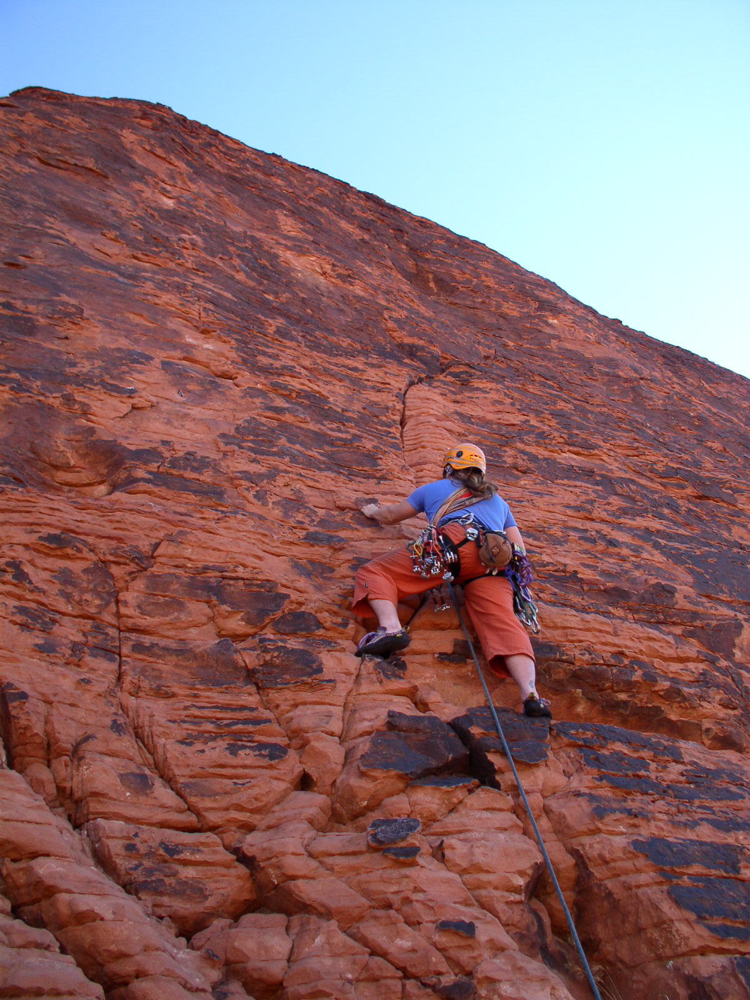
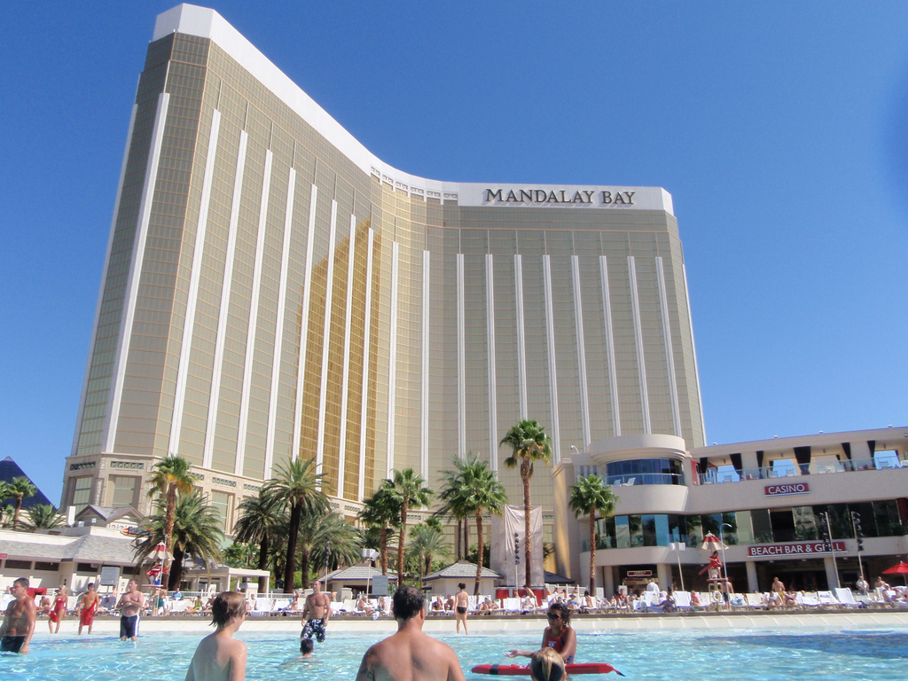
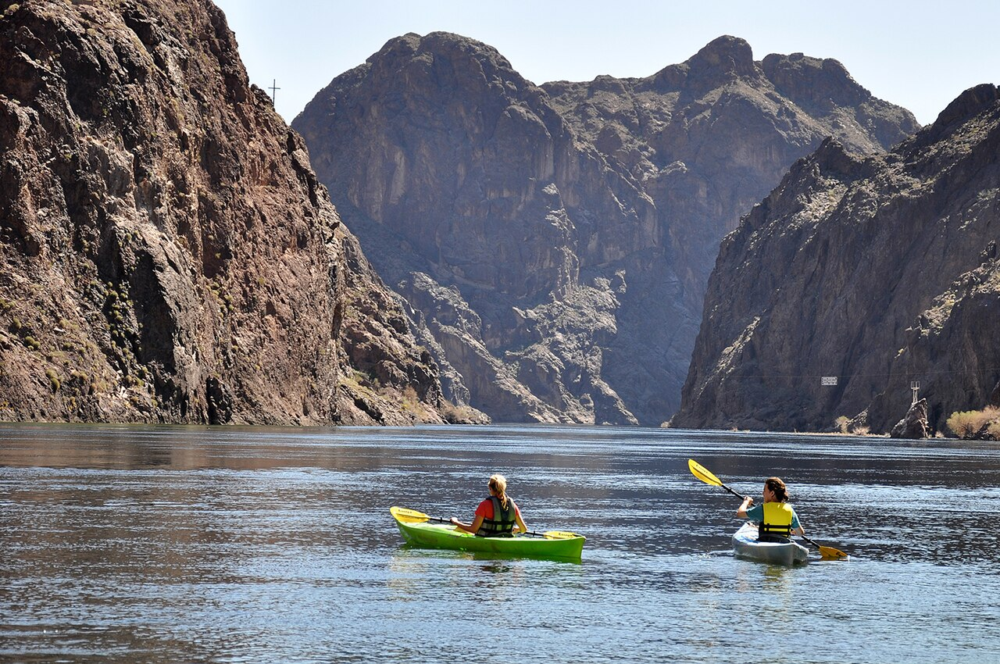

Outbound · Friday Apr 16
BOS LAS Nonstop
5:55 pm → 9:05 pm
Delta DL408 · Airbus A321neo. Nonstop, 6h 10m. Boston Terminal A → Las Vegas Terminal 1.
Spring break 2027

2 nights Mandalay Bay poolsApr 20–22 · resort
2 nights Kayaking & the damApr 22–24 · Henderson
| April | Main plan | Afternoon / evening | Sleep |
|---|---|---|---|
| Fri 16 | Fly Boston → Las Vegas | DL408 · 5:55 pm → 9:05 pm · nonstop | Red Rock |
| Sat 17 | Easy Red Rock hike | Groceries, gear & settle in | Red Rock |
| Sun 18 | Early Calico climbing | Magic Bus · relaxed afternoon | Red Rock |
| Mon 19 | Climb Red Rock | Calico or a canyon day · afternoon flexible | Red Rock |
| Tue 20 | Climb or ride → Mandalay | Check in · pool & Strip | Mandalay |
| Wed 21 | Resort pool + Vegas show | Lazy river · KÀ or Blue Man Group | Mandalay |
| Thu 22 | Dig This → Henderson | Last resort swim · machines · move | Henderson |
| Fri 23 | Kayak Black Canyon | Blazin’ Paddles · shower & relaxed evening | Henderson |
| Sat 24 | Hoover Dam → flight | Boulder City · dinner · DL822 at 10:55 pm | On plane |
| Sun 25 | Boston · 8:55 am | DL1054 from Raleigh–Durham · home & rest | Home |
Tuesday and Thursday stay changes retained. Saturday Apr 24 is checkout day; no Saturday-night lodging.
Outbound · Friday Apr 16
5:55 pm → 9:05 pm
Delta DL408 · Airbus A321neo. Nonstop, 6h 10m. Boston Terminal A → Las Vegas Terminal 1.
Return · Saturday Apr 24 → Sunday Apr 25
10:55 pm Sat → 8:55 am Sun
Delta DL822 → DL1054. Airbus A321neo, then A319. 7h total with a 38-minute connection in Raleigh–Durham. Las Vegas Terminal 1 → Boston Terminal A.
Early climbing, flexible afternoons, then resort time, a river day and Boulder City. Activities below are proposals, not reservations.
Fri Apr 16 → Tue Apr 20 · 4 nights
Family climbing, hikes and room to spread out.
Plan around the Scenic Drive's currently published 6 am opening. Recheck the April 2027 opening and timed-entry rules before the trip. Early arrival improves the odds but does not guarantee a parking spot or quiet routes; no need to turn a family morning into a queue-time contest.
Confirm any rental's pool temperature, access hours and heating charge before counting on swimming. For the condo, ask about clubhouse access for short stays as well.
Tue Apr 20 → Thu Apr 22 · 2 nights
The resort part of the week.
Thu Apr 22 → Sat Apr 24 · 2 nights
Machines, the dam and a day on the river.
The Half-Day Deluxe currently combines a UTV transfer, a 15–20 minute slot-canyon hike and a guided four-mile paddle, with Emerald Cave and lunch. The operator lists a minimum age of 8, so both children meet the current minimum. Confirm the April 2027 route, departures, meeting point and return time directly with the outfitter. The Hoover Dam Visitor Center and tours currently open daily at 9:00 am; the guided Dam Tour is sold on-site, first come first served.
Look for a two- or three-bedroom rental in southeastern Henderson or around Boulder City. A hot tub or confirmed heated pool would be useful; compare the full cost with heating included.